| [ Team LiB ] |
|
11.3 Autotuning TechniquesMany process control systems have an automatic tuning (autotune) feature. The operator can simply push the autotune button and have the controller tune itself, that is, determine the values of the tuning parameters. This is done not continuously (an approach known as adaptive control) but only when the operator feels that the current set of tuning parameters is not performing well. The most common method of automatic tuning uses a relay switch to create what is essentially an on-off controller. The resulting oscillatory behavior is analyzed to determine the proper controller settings. Control Block DiagramThe basic control loop for a controller with an autotune relay switch is shown in Figure 11-11. For normal operation, the switch is connected to the PID controller, as shown in Figure 11-11a. When the autotune function is operating, the switch is set to the output of the relay block, as shown in Figure 11-11b. Figure 11-11. Control block diagram for an autotune relay switch. (a) Switch set to PID Control. (b) Switch set to relay function for automatic tuning.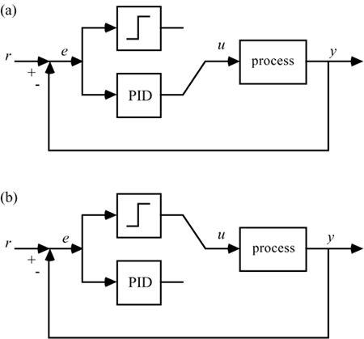 Notice that the relay block represents a nonlinear function. As drawn, it represents the following: 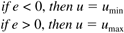 Assuming that the input is symmetrical with a steady-state value of 0 (in deviation variable form), the magnitude of the input change allowed is h, so umax = h, and umin = –h. Notice that this assumes that the process gain is positive. If the process gain is negative, then switch the inequalities shown in Equation 11.2. In autotune mode, the closed-loop system oscillates and the manipulated variable action is on-off (or bang-bang), as shown in Figure 11-12. In this example, h = 0.05. Figure 11-12. Oscillations in autotune mode.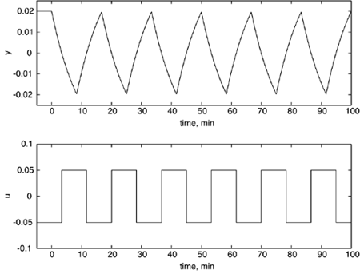 There are two parameters that result from this autotune test. One is the period (time between successive peaks), P, and the other is the amplitude of the process output, a. The period has units of time; the ultimate frequency can be found from 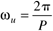 And the ultimate gain can be found from the amplitude 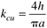 In the results shown in Figure 11-12, the period is 16.4 min and the process output amplitude is 0.019. The manipulated input magnitude is 0.05, yielding the following values for kcu and wu: 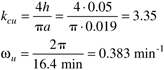 The behavior is very similar to that obtained from the Ziegler-Nichols closed-loop cycling method. The Ziegler-Nichols results for the same process are shown in Figure 11-13. Figure 11-13. Ziegler-Nichols closed-loop test. The controller proportional gain is kc = 3.83.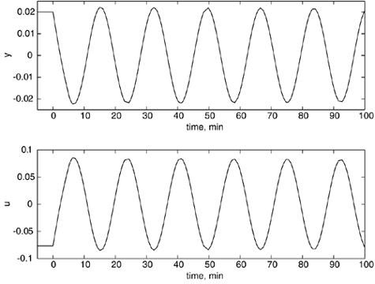 The Ziegler-Nichols test yields an ultimate gain of 3.83 and an ultimate period of 17.13 min; contrast these with the relay values of 3.35 and 16.4 min. Relay Deadband (Hysteresis)If the ideal relay is implemented, there can be problems if there is process or measurement noise. To handle this, a deadband (or hysteresis) with a magnitude of e is added to the relay switch, as shown below (again, a positive process gain is assumed). The magnitude of the deadband is selected to be at least two to three times the standard deviation of the measurement noise: 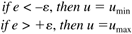 Also, if the error is in between the minimum and maximum limits, then the control action stays at the current value. Controller TuningOnce the process parameters (ultimate gain and frequency) are identified from the relay test, a controller tuning procedure must be used. An obvious method is to use the Ziegler-Nichols values, since the autotune test is similar to the Ziegler-Nichols test. These controller tuning parameters are not robust, however, and result in closed-loop systems that may go unstable if the process conditions change. An alternative is to use a model-based procedure, such as IMC-based PID. A problem is that the ultimate gain and frequency must be converted to model parameters. Since only two parameters, ultimate gain and frequency, are obtained from the relay test, a two-parameter process model must be developed. The classical first-order + time-delay model cannot be used because it has three parameters. Two options are integrator + time delay (11.6) and gain + time delay (11.7): 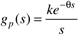 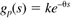 The integrator + time-delay model is generally a very good approximation to a first-order + time-delay process if the time constant is much larger than the time delay. The gain + time-delay model is generally a good approximation if the time delay is much larger than the time constant (such as for liquid flows with significant pipe volume delays). Integrator + Time DelayFor the integrator + time-delay model, the dead time and process gain can be found from the relay parameters in the following fashion: 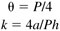 The IMC-based PI tuning parameters can be found from (see Chapter 9) 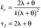 Gain + Time DelayFor the gain + time-delay model, the dead time and process gain can be found from the relay parameters in the following fashion 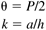 The IMC-based PI tuning parameters can be found from 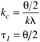 In both cases, the IMC filter-factor (l) is adjusted to provide a tradeoff between nominal performance and robustness to model uncertainty. Comparison of Model-Based PI ControllersIn the example shown in Figure 11-12, the period and output amplitudes were 16.4 min and 0.019 for a control magnitude of 0.05. The IMC-based PI controllers obtained under the two different model-based assumptions are compared in Table 11-1. The responses of the two model-based PI controllers are shown in Figure 11-14. The l value was adjusted to achieve 25% overshoot in both cases. For more robust performance, the l values must be increased. Figure 11-14. Comparison of closed-loop responses for the example process. IMC-based PI tuning parameters based on two different models (integrator + time-delay and gain + time-delay) identified from a relay test.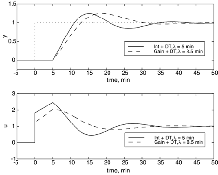 |
| [ Team LiB ] |
|